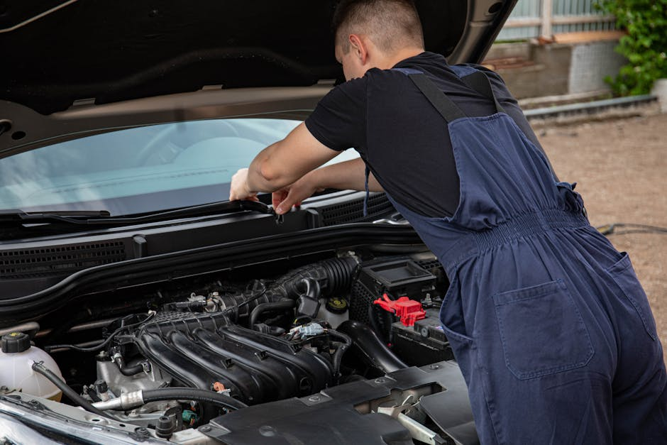

Complete Auto Glass Solutions
Discover the specialized services we promote to ensure your vehicle maintains pristine clarity and vital structural integrity.

Windshield Replacement
When damage is too severe to fix, a full windshield replacement is necessary to restore your car's structural strength. We connect you with top-tier professionals who use premium materials and precise techniques to ensure a flawless, factory-grade installation.

Windshield & Chip Repair
Small rocks and debris can cause annoying blemishes on your glass. Fast and efficient chip repair prevents these minor imperfections from spreading into massive cracks, saving you time and avoiding the cost of a complete replacement.

Car Window Replacement
Shattered side or rear glass leaves your interior exposed to the elements and security risks. We help arrange swift car window replacement services that clear away broken debris and install perfectly fitting glass, restoring your peace of mind.